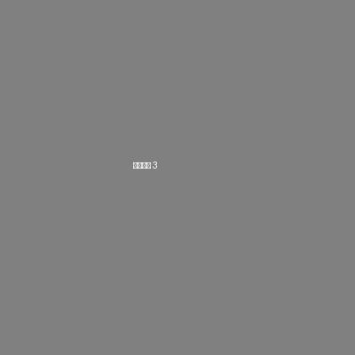

讀畫樓 · 深度研究报告

| 朝代 | 隋代（581-618年） |
|---|---|
| 材质 | 青瓷（南方窑口灰胎青黄釉） |
| 尺寸 | 估高20-25cm，球形腹 |
| 品相 | 良好 — 完整无裂，口沿无磕，四系完好 |
此罐为典型隋代球形四系罐，整体呈浑圆饱满之势。直口微敞，口沿圆润平整，唇口略外翻。颈部极短，几近无颈，直接过渡至丰肩。溜肩丰满，设四系对称分布。鼓腹浑圆，最大径在腹部中上部。下腹急收，底部承矮圈足，足端平切。
通体施青黄釉（橄榄黄绿色），以铁为着色剂，釉层较薄呈半透明质感。釉面可见细密开片纹，为千余年自然老化所致。光泽柔和温润，呈亚光至半亮光泽。施釉不及底，上半部较为均匀，至下腹部渐薄，近底部及圈足处露胎不施釉。
此罐集贴花、模印、刻划、戳印等多种技法于一身，层次分明。腹部上半段以高浮雕覆莲瓣纹为主体，莲瓣呈尖瓣形，自肩部向下覆垂排列环绕一周。每片莲瓣内部中央各有一枚模印贴花小型忍冬纹。肩部四系之间各贴一枚圆形团花纹饰。莲瓣间竖向分隔线顶端各有一列戳印联珠纹。肩部数道平行弦纹环绕器身。
以下多项特征共同支持隋代（581-618年）断代：球形浑圆器形配四系为隋代罐类标准形制；覆莲瓣尖瓣形高浮雕为隋代莲纹典型表现；戳印联珠纹是隋代重要断代标尺；青黄釉半截施釉为南方青瓷隋代普遍工艺；贴花工艺在隋代达到鼎盛期；佛教题材装饰体现隋代佛教文化繁盛。
整体评级：良好。器身完整无裂纹、冲线或崩口，口沿完好无磕缺，四系均完好，莲瓣贴花、团花贴花保持完好无脱落，圈足完整无磕碰。正常老化开片符合年代特征，局部轻微土沁为入土自然形成。对于距今约1400年的高古瓷器而言，此品相相当难得。
影响因素：利好方面包括品相完整、装饰丰富、联珠纹等隋代标志性特征明确、佛教题材受市场关注；限制因素包括来源文献不足、高古瓷市场相对小众、窑口待进一步确认。建议可做热释光（TL）测试确认年代，增强市场信心。如有出土/传世明确来源记录，估值可进一步提升。